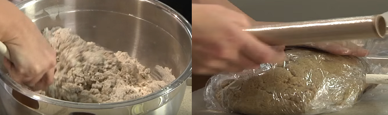
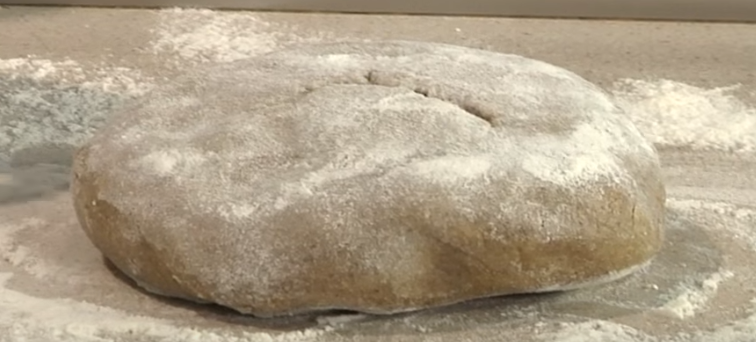
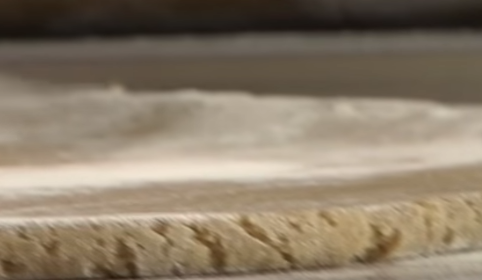
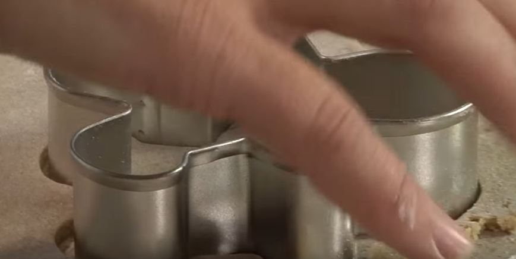

1. Liszthez adjuk a mézet, tojásokat, margarint, fűszereket, porcukrot, jól összedolgozzuk, és fél órát pihentetjük.
2. Lisztezett felületen vékonyra kinyújtjuk.
 3. Nagyobb kör alakú szaggatóval és kisebbel kiszaggatjuk.
 4. Nagyobbra teszünk egy-egy kisebbet (ezek a bagoly szemei).
5. Kettévágott mandula az orra. Egy-egy drazsészemet teszünk a kisebb kör alakra.
6. Sütőpapírral bélelt tepsibe sorakoztatjuk, és készre sütjük.